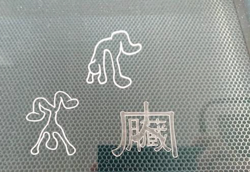

レーザーカッター
やったこと
1mmのプラ板でクリップを作る
trotecのページ
人型
内臓クリップ
<ハンガー

順番
鍵を回しピー、ピピピ、ピーと鳴るのを待つ
ノギスで加工する素材の厚みを図っておく
usbでpsdのデータを送りイラレで開く
スウォッチライブラリ スピーディで枠線の色を0.001の赤と青にする（この色じゃないと反応しない）
プリント トロテック
自動回転のチェックを外す
プリントの加工（U）
詳細設定 ジョブサイズの最小化にチェック
材料設定 種類と厚み プラスチックを選択 アクリル1mmを選択
オプション 標準500 カラー
解像度125〜1000 デフォルトは500
カットラインなし カラーを使う プリントを押す
ジョブネームが出て来て日ずけとか名前を入力
ドラグ＆ドロップ
左上に合わせる アクリルばんも左上に置く
右下のusbで繋ぐっぽいマークをクリック
シャットダウン 閉じてヘッドを元の位置、テーブルを一番下まで下げる 鍵できる
注意とか
火災の原因 素材が塩ビの混ぜ物 合皮 レーザーの光が反射するもの（表面加工）
右についてるのは集塵機 塵を吸う
テーブルはハニカム構造で切断された小さなパーツを下に落とす
振り返って
やらかした時の代償がデカかったので真面目にやった
靴を作る際に生かしていきたい
失敗
アウトラン化をすること